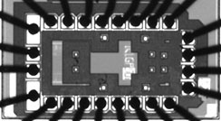

General abstract
A transistor is a three-terminal element used to control a current across two of its terminals by applying a voltage to the third one. Because of this property the transistor can operate as an amplifier of electric signals (like in your audio player) or as a switch controlled by other switches (like in the logic circuits of your computer). Transistors can be packed densely on semiconductor chips (up to 1000000000 per square centimetre), are fast (can respond in less than 0.000000001 seconds), and are reliable (keep functioning for dozens of years).
The nano-scale integration of large numbers of transistors and other elements creates systems and applications that define how the world works, plays, and communicates today. For example, microsystems around us keep us connected, sense physical quantities, make decisions using built-in processing capacity, and assist us in our daily lives, like in cell phones, video games, air bags, pacemakers, fuel cells, water quality systems, and so on. The semiconductor industry is the manufacturing business with the largest added value and, at the same time, one of the most eco-friendly on the planet.
Innovative designs and process technology provide nearly all of the added value in semiconductor devices. Designing integrated circuits and microsystems involves challenging theoretical and practical problems and requires a solid engineering background and a good dose of creativity. I like doing research and training students in this field, because it is a highly rewarding activity that contributes to improving quality of life, health, and environment. Over the last few years, I designed several microsystems with coworkers and students and I captured some of them in the microphotographs below. Those chips were fabricated by STMicroelectronics and TSMC in CMOS technologies with minimum features at 180 nm, 130 nm, and 90 nm.
|  |